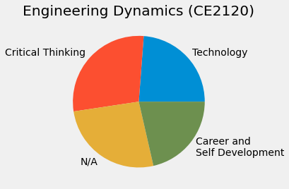
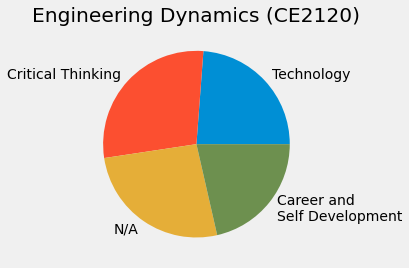

Career Readiness in the Classroom: Integrating NACE Career Competencies
June 24, 2024
Connecting is key to learning
- Connections
through lived experiences
- create new neuron paths:
- reinforcing learning
- Education is experience

Experiment 1: How many soccer scores can you remember?
- 62 students given soccer (football) knowledge questionaire
- asked to memorize scores from past English and Scottish matches
- the soccer knowledge questionaire was directly correlated to memorized score count

Map ABET Learning Outcomes

Result: Students connect learning to skills
On average, students identified 5-6 career competencies that they practiced during studying, projects, and homeworks.
I do not directly assess leadership and its not directly covered by ABET student outcomes, but 26% of students still connected this career competency to the course as seen in Fig. 1. Fig. 1 demonstrates that students were able to connect c
ourse content to their experiences in preparing for engineering careers. In Table 2, students shared anecdotes of specific skills they used.
The majority of students mentioned improving critical thinking through “problem solving” and teamwork/communication in “working with others to improve assignments”, 25% and 27% respectively.

Final voluntary ABET connection (collection)
- more than 75% of the students submitted an assignment
- connected assignment to career skill.
 

Future work: reduce my work
- enable students to continuously provide feedback
- align assignments to career skills and therefore ABET
- Here, monitor changes in curriculum, prerequisites, and even instructor improvements
- monitor breadth of coverage across career skills
- skills map to ABET outcomes → continuous data collection of alignment and improvement